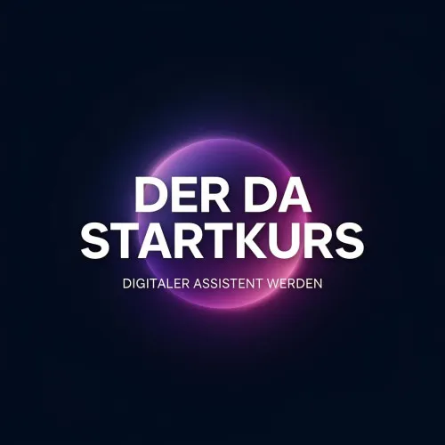
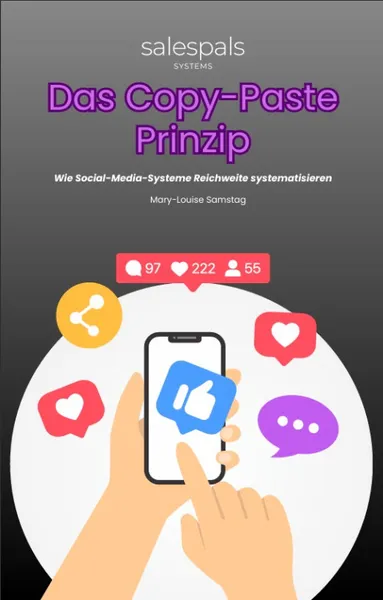

Das geheime Spielbuch für Social Media Manager:innen – Teil2
Produktprofil · Marktplatz-Daten 2026-10-14 · Verkaufsseiten-Recherche 2026-10-14 · Kategorien: Marketing Services
- Das geheime Spielbuch für Social Media Manager:innen – Teil2 ist ein/e E-Book in Marketing Services, vertrieben über den Digistore24-Marktplatz von Anbieter Medina88, gelistet seit 2026-09-03.
- Listenpreis $208.07 (single payment) — Checkout, Auslieferung und Rückerstattungen laufen über Digistore24 selbst, nicht über den Anbieter.
- Käuferschutz: keine standardisierte Garantie-Formulierung gefunden — Rückerstattungsbedingungen vor der Zahlung auf der offiziellen Seite prüfen.
Interesse an Das geheime Spielbuch für Social Media Manager:innen – Teil2? Aktueller Preis, Boni und Garantiebedingungen finden Sie auf der offiziellen Seite des Anbieters:
Offizielle Verkaufsseite ansehen
Affiliate-Link (Werbung) — wir verdienen ggf. eine Provision, ohne Mehrkosten für Sie.

Marktplatz-Daten
| Produkttyp | E-Book |
|---|---|
| Preis | $208.07 (Single payment) |
| Garantie/Rückgabe | Laut Verkaufsseite des Anbieters — vor dem Kauf auf der offiziellen Seite prüfen |
| Anbieter | Medina88 (gelistet seit 2026-09-03) |
Marktplatz-Beschreibung des Anbieters
Der weiterführende digitale Guide für Social Media Manager:innen, die ihr Business professionell skalieren, mehrere Kunden strukturiert betreuen und ihre Einnahmen strategisch weiterentwickeln möchten. „Das geheime Spielbuch für Social Media Manager:innen – Teil 2“ richtet sich an Social Media Manager:innen, die über die Grundlagen hinausgehen und aus ihrer Tätigkeit ein strukturiertes, skalierbares Business entwickeln möchten. Zielgruppe: • aktive Social Media Manager:innen und Freelancer:innen • Selbstständige, die mehrere Kunden professionell betreuen möchten • Social Media Manager:innen, die ihre Preise und Profitabilität optimieren möchten • Personen, die Prozesse aufbauen, Aufgaben delegieren oder ein Team entwickeln möchten • Social Media Manager:innen, die ihr Business strategisch skalieren möchten Themenschwerpunkte: • Geschäfts- und Agenturmodelle • mehrere Kunden effizient betreuen • Prozesse, Delegation und Teamaufbau • strategischer Einsatz von Ads • Reichweite und Sichtbarkeit • Authority und Positionierung • fortgeschrittene Preisgestaltung • konkreter 90-Tage-Skalierungsplan Warum das Produkt interessant für Affiliates ist: • klar definierte Zielgruppe im Bereich Social Media, Freelancing und Online-Business • höherpreisiges digitales Produkt mit sofortiger Auslieferung • konkreter Business- und Skalierungsnutzen • geeignet für Content rund um Social Media Management, Selbstständigkeit, Pricing, Kundengewinnung, Prozesse und Business-Wachstum • logische Weiterführung von Teil 1 und gleichzeitig als eigenständiger Guide nutzbar Preis: 199 €
Von der Verkaufsseite des Anbieters
Seitentitel: Das geheime Spielbuch für Social Media Manager:innen – Teil 2 - Digistore24
Abschnitts-Überschriften
- Das geheime Spielbuch für Social Media Manager:innen – Teil 2
- Das geheime Spielbuch für Social Media Manager:innen – Teil 2
- Das geheime Spielbuch für Social Media Manager:innen – Teil 2
Einstiegstext
Du hast erste Kunden gewonnen – jetzt geht es darum, dein Social-Media-Business über deine eigene Zeit hinaus zu skalieren.
Teil 2 zeigt dir, wie du Strukturen aufbaust, mehrere Kunden effizient betreust, Aufgaben delegierst, bezahlte Werbung strategisch einsetzt, deine Positionierung stärkst und profitablere Preismodelle entwickelst.
Enthalten sind zusätzlich praktische Business-Tools, Rechner, Dashboards, Checklisten und Vorlagen sowie dein 90-Tage-Skalierungsplan.
Für Social Media Manager:innen, die aus operativer Dauerarbeit ein strukturierteres und skalierbares Business entwickeln möchten.
Preisangaben auf der Seite: $10
Recherche-Methode: rohes HTML · 422 Wörter · Qualität: rich · recherchiert am 2026-10-14. Vollständige Recherche-Datei (MD) ↗
Wie Produkte dieser Art geliefert werden
Allgemeiner Hinweis zu diesem Produkttyp (keine anbieterspezifische Anleitung): E-Books auf Digistore24 werden als digitaler Download geliefert (meist PDF/EPUB): direkt nach dem Checkout erhalten Sie einen Downloadlink oder Mitgliederzugang und können auf jedem Gerät lesen. Für die genaue Anwendung von Das geheime Spielbuch für Social Media Manager:innen – Teil2 sind die offizielle Verkaufsseite und die enthaltenen Materialien maßgeblich.
Weitere Bilder (von der Verkaufsseite des Anbieters)

Bilder stammen von der offiziellen Verkaufsseite des Anbieters und zeigen das Produkt, wie es beworben wird.
Gut zu wissen
- Hoher Preis: $208.07 ist eine erhebliche Ausgabe — prüfen Sie, ob es einen Zahlungsplan gibt, und vergleichen Sie zuerst die günstigeren Alternativen der Kategorie.
- Keine Garantie-Formulierung in unserer Recherche gefunden — bestätigen Sie das Rückgabefenster auf der offiziellen Seite, bevor Sie kaufen.
Was ist Das geheime Spielbuch für Social Media Manager:innen – Teil2?
Das geheime Spielbuch für Social Media Manager:innen – Teil2 ist ein/e e-book in der Kategorie Marketing-Dienstleistungen des Digistore24-Marktplatzes, veröffentlicht von Anbieter Medina88 und im Verkauf seit 2026-09-03. Der Anbieter beschreibt es so: "Der weiterführende digitale Guide für Social Media Manager:innen, die ihr Business professionell skalieren, mehrere Kunden strukturiert betreuen und ihre Einnahmen strategisch weiterentwickeln möchten. „Das geheime Spielbuch für Social Media Manager:innen – Te" (Marktplatz-Beschreibung des Anbieters, leicht gekürzt).
Das geheime Spielbuch für Social Media Manager:innen – Teil2 Preis: was Sie zahlen
Der Marktplatz listet Das geheime Spielbuch für Social Media Manager:innen – Teil2 zum $208.07 Preis (single payment). Digistore24 fügt im Checkout die gesetzliche Steuer Ihres Landes hinzu — dort sehen Sie den Endbetrag vor der Zahlung. Die Verkaufsseite selbst nennt: $10 (Anbieteraussagen — verbindlich ist der Checkout-Betrag). Eine separate Plattformgebühr gibt es nicht; Anbieter können eigene Upsells nach dem Checkout anbieten.
Das geheime Spielbuch für Social Media Manager:innen – Teil2 Rückerstattung und Geld-zurück-Garantie
Wir haben keine standardisierte Garantie-Formulierung auf der Verkaufsseite gefunden. Rückerstattungen für Digistore24-Käufe laufen über die Plattform: Antrag über den Support-Link in Ihrer Bestell-E-Mail, innerhalb des Garantiezeitfensters, das im Checkout angezeigt wird. Praktischer Rat: Entscheiden Sie innerhalb des Fensters — wenn das Produkt unter den Erwartungen bleibt, erstatten lassen statt irren lassen.
Mechanik im Detail: So funktionieren Digistore24-Rückerstattungen.
Für wen ist Das geheime Spielbuch für Social Media Manager:innen – Teil2 geeignet?
Basierend auf der Marketing-Dienstleistungen-Einordnung und der single payment-Abrechnung richtet sich Das geheime Spielbuch für Social Media Manager:innen – Teil2 an Käufer, die marketing-dienstleistungen-Lösungen suchen und ein Budget für einen Premium-Kauf eingeplant haben. Der ehrliche Test ist nicht die Kategorie, sondern Ihre eigene Situation: Werden Sie es realistisch innerhalb des Garantiefensters nutzen? Wenn ja, ist der Preis eine Investition; wenn nein, ist er Ballast — unabhängig von der Qualität.
Ist Das geheime Spielbuch für Social Media Manager:innen – Teil2 seriös? Was Sie vor dem Kauf prüfen
Wir bewerten keine Seriosität — das kann niemand, ohne das Produkt zu nutzen. Prüfbare Punkte, alle auf dieser Seite: die Marktplatz-Historie des Anbieters (im Verkauf seit 2026-09-03), die wörtlichen Verkaufsseiten-Auszüge unten (gekennzeichnet als Anbieteraussagen — deren Werbung, nicht unsere Empfehlung), die Garantiebedingungen im Checkout und die Auslieferungsart. Vorsichtsignale bei jedem Angebot: Countdown-Dringlichkeit gepaart mit vagen Rückerstattungsbedingungen, Testimonials ohne Datum und Anbieterseiten, die den Preis bis zum Checkout verstecken.
Wie kommen Sie nach dem Kauf an Das geheime Spielbuch für Social Media Manager:innen – Teil2?
Der Checkout läuft über Digistore24. Nach der Zahlung: E-Books auf Digistore24 werden als digitaler Download geliefert (meist PDF/EPUB): direkt nach dem Checkout erhalten Sie einen Downloadlink oder Mitgliederzugang und können auf jedem Gerät lesen. Bewahren Sie die Bestell-E-Mail auf — sie ist Ihr Schlüssel zum/d zur e-book, zu Rückerstattungsanträgen und zum Digistore24-Käufersupport.
Das geheime Spielbuch für Social Media Manager:innen – Teil2 Erfahrungen: so recherchieren Sie richtig
Die meisten „Erfahrungsberichte" zu Marktplatz-Produkten sind Affiliate-Inhalte — einschließlich Seiten wie dieser, die an Käufen mitverdienen. Behandeln Sie jeden Bericht (auch unseren) als Ausgangspunkt und prüfen Sie gegen Primärquellen: die Verkaufsseite des Anbieters, die Digistore24-Rückerstattungsrichtlinie und — für marketing-dienstleistungen — unabhängige Communities außerhalb des Affiliate-Ökosystems. Auf dieser Seite sind die Verkaufsseiten-Auszüge unten wörtlich zitiert, damit Sie die Aussagen des Anbieters bewerten können, ohne wegzuklicken.
Wie Sie Das geheime Spielbuch für Social Media Manager:innen – Teil2 sicher kaufen
- Öffnen Sie die offizielle Verkaufsseite und lesen Sie das vollständige Angebot.
- Bestätigen Sie Endpreis und Garantiezeitfenster auf der Digistore24-Kassenseite — sie ist bindend, kein Vergleichsportal.
- Zahlen Sie innerhalb des Digistore24-Checkouts (niemals per Überweisung oder Off-Platform-Links).
- Speichern Sie die Bestellbestätigung; notieren Sie die Rückerstattungsfrist im Kalender.
- Prüfen Sie zügig. Der Digistore24-Käufersupport hilft, wenn der Anbieter nicht reagiert.
Vollständiges Recherche-Archiv für dieses Produkt (Markdown: kompletter Marktplatz-Datensatz + wörtliche Verkaufsseiten-Auszüge): Das geheime Spielbuch für Social Media Manager:innen – Teil2 — vollständiges Datenarchiv (Markdown-Datei: 58888-das-geheime-spielbuch-f-r-social-media-manager-innen-teil2.md).
- Listenpreis & Abrechnung — Quelle: offizielle Digistore24-Marktplatz-API, Stand 2026-10-14. Maßgeblich für den aktuellen Preis ist immer die Kassenseite.
- Verkaufsseiten-Zitate — Quelle: https://www.digistore24.com/product/728339, abgerufen 2026-10-14 (Methode: rohes HTML). Verify: offizielle Seite öffnen.
- Garantie / Rückgabe — vom Anbieter festgelegt; vor dem Kauf auf der Verkaufsseite bestätigen.
- Nicht von uns geprüft: Produktqualität, Ergebnisse, Testimonials — kein Praxistest für dieses Listing durchgeführt.
Häufige Fragen zu Das geheime Spielbuch für Social Media Manager:innen – Teil2
Antworten aus dem Marktplatz-Snapshot (2026-10-14) und der Verkaufsseiten-Recherche (2026-10-14); Anbieteraussagen sind inline gekennzeichnet.
Was ist Das geheime Spielbuch für Social Media Manager:innen – Teil2?
Das geheime Spielbuch für Social Media Manager:innen – Teil2 ist ein Angebot des Typs „E-Book" im Digistore24-Marktplatz, Anbieter: Medina88, gelistet seit 2026-09-03. Eingepflegt unter Marketing-Dienstleistungen. Digistore24 wickelt Checkout, Lieferung und Rückgaben ab.
Wie viel kostet Das geheime Spielbuch für Social Media Manager:innen – Teil2?
Der Digistore24-Marktplatz listet es für $208.07 (single payment). Preise legt der Anbieter fest und können sich ändern — der Marktplatz-Eintrag oben zeigt den Schnappschuss; die offizielle Verkaufsseite zeigt den aktuellen Preis.
Gibt es eine Geld-zurück-Garantie für Das geheime Spielbuch für Social Media Manager:innen – Teil2?
Unsere Verkaufsseiten-Recherche hat keine explizite Garantie-Formulierung gefunden. Viele Digistore24-Produkte bieten 60 Tage Geld-zurück, aber das legt jeder Anbieter selbst fest — bestätigen Sie es auf der offiziellen Verkaufsseite, bevor Sie kaufen.
Ist Das geheime Spielbuch für Social Media Manager:innen – Teil2 seriös?
Wir bewerten keine Seriosität — wir veröffentlichen überprüfbare Zahlen: Anbieter Medina88 (gelistet seit 2026-09-03), mit der vollständigen Verkaufsseiten-Recherche archiviert auf dieser Seite (Anbieteraussagen als solche gekennzeichnet). Lesen Sie unsere 6-Punkte-Bewertungsmethode und entscheiden Sie anhand der Zahlen — oder diskutieren Sie Das geheime Spielbuch für Social Media Manager:innen – Teil2 auf GitHub.
Wo kann ich Das geheime Spielbuch für Social Media Manager:innen – Teil2 sicher kaufen?
Nur über die offizielle Verkaufsseite, die auf dieser Seite verlinkt ist (Checkout und Rückgaben laufen über Digistore24). Prüfen Sie dort Preis und Garantie vor der Bestellung. Der Link ist ein Affiliate-Link — der Kauf unterstützt diese Website ohne Mehrkosten für Sie.
Wie erhalte ich Das geheime Spielbuch für Social Media Manager:innen – Teil2 nach der Zahlung?
Der Checkout läuft über Digistore24: Nach der Zahlung erhalten Sie Ihren Zugang oder Download per E-Mail und in Ihrem Digistore24-Kundenkonto. Lieferdetails für diesen Produkttyp: E-Books auf Digistore24 werden als digitaler Download geliefert (meist PDF/EPUB): direkt nach dem Checkout erhalten Sie einen Downloadlink oder Mitgliederzugang und können auf jedem Gerät lesen. Bei Problemen kann der Digistore24-Käufersupport Ihre Bestellung wiederherstellen.
Alle 50 Käuferfragen zu Marketing-Dienstleistungen — das komplette Kategorie-FAQ.
Das geheime Spielbuch für Social Media Manager:innen – Teil2 auf Reddit diskutieren
In Community-Threads vergleichen echte Käufer Erfahrungen. Wir verlinken Communities, keine einzelnen Posts — Threads verschwinden, Subreddits bleiben:
- r/Unternehme — deutschsprachige Community mit Diskussionen zu marketing services.
- r/Vertrieb — deutschsprachige Community mit Diskussionen zu marketing services.
- Reddit-Suche nach „Das geheime Spielbuch für Social Media Manager:innen – Teil2" — Live-Ergebnisse, von uns nicht beeinflusst.
- Top-„Erfahrungs"-Treffer dieses Jahr — selbst nach Aktualität filtern.
Passendes auf Amazon.de
Physische Produkte und Zubehör, die häufig zusammen mit Das geheime Spielbuch für Social Media Manager:innen – Teil2 gekauft werden:
- Marketing Bücher auf Amazon.de — Top-Ergebnisse, Amazon-Ranking.
- Bestseller: Marketing Bücher — live Liste von Amazon, von uns nicht kuratiert.
Werbung: Als Amazon-Partner verdient DigistorePicks DE an qualifizierten Käufen (Partner-tag adminstorede-21). Amazon setzt eigene Preise und Provisionen (niedrige einstellige Prozente — weit unter den 30–75% der Digistore24-Anbieter). Amazon ist ein Convenience-Angebot für Sachprodukte, kein Ersatz für das digitale Produkt oben.
Ähnliche Angebote in Marketing-Dienstleistungen

VERA-X AI Business Engine™ ist ein vollständig aufgebautes KI-Business-System für Unternehmen. Statt nur Software zu verkaufen, erhält der Kunde eine komplette


Bis zu 1.046 € Provision pro Empfehlung — mit einem Produkt, das sich von selbst verkauft. Stell dir vor, du empfiehlst ein Produkt, das nicht nur gut konvertie

Verdiene 50% Provision mit der #1 Masterclass für Online-Kurs-Business Promote das kostenlose Online Training „Online Kurse erstellen und passiv verkaufen mit K
Weitere Angebote von Medina88

Steuer 1×1 für Creator – von Almedina Hajro Steuern, Buchhaltung und finanzielle Planung gehören zu jeder professionellen Selbstständigkeit – gerade für Creator

Deine Zielgruppe möchte sich selbstständig machen, weiß aber nicht, wie sie Anmeldung, Finanzen und Kundengewinnung angehen soll? Das 90-Tage-Gründungssystem vo

Organisiere Content, Kunden, Finanzen und Aufgaben an einem zentralen Ort Verbringst du täglich Zeit damit, zwischen Notizen, Tabellen, Kalendern, E-Mails und v

Ein praxisorientierter digitaler Guide für angehende und aktive Social Media Manager:innen, die ihr Angebot professionell aufbauen, Kunden gewinnen und ihr Soci
Ähnliche Preislage in Marketing-Dienstleistungen
Das ETERNUM Komplett-Paket bündelt 9 Produkte rund um KI, Content und Sichtbarkeit in einem Bundle – entwickelt von Ernst Schrempf, Unternehmer mit über 20 Jahr

Die Aivatar Academy ist die führende deutschsprachige Community für Highend KI-Avatare – eine Komplettlösung, mit der jeder in wenigen Minuten professionelle Av

Warum es sich lohnt, diesen Kurs zu bewerben: Unser Online-Videokurs "Digitaler Assistent werden" bietet die perfekte Lösung für Menschen, die ortsuna

Dieses kostenlose Playbook ist der ideale Einstieg in das Thema Social-Media-Systeme. Es erklärt verständlich, warum Reichweite kein Zufall ist, welche Denkfehl
Ähnliche Suchanfragen
Wo Sie es sich ansehen können
Wo Sie es sich ansehen können
Aktuelle Preise, Garantie und Boni finden Sie auf der offiziellen Verkaufsseite:
Offizielle Verkaufsseite ansehen
Das ist ein Affiliate-Link (Werbung) — kaufen Sie darüber, verdienen wir ggf. eine Provision, ohne Mehrkosten für Sie.
Quellen & weiterführende Informationen
- Offizielle Verkaufsseite (aktueller Preis, Garantie, Boni): www.digistore24.com/product/728339 (Affiliate-Link)
- Öffentliche Digistore24-Produktseite: checkout-ds24.com/product/728339
- Vollständige Recherche-Datei (Markdown, versioniert): content/products/58888-das-geheime-spielbuch-f-r-social-media-manager-innen-teil2.md
- Affiliate-Supportseite des Anbieters: almedinahajro.de
- Marktplatz-Kategorie: Marketing-Dienstleistungen
Wie wir Produkte wie Das geheime Spielbuch für Social Media Manager:innen – Teil2 bewerten
Sechs Prüfungen, ausschließlich mit offiziellen Marktplatz-Zahlen. Die vollständige Bewertungsmethode lesen · unsere Recherche-Standards & Kennzeichnung.
Fragen oder eigene Erfahrungen mit Das geheime Spielbuch für Social Media Manager:innen – Teil2?
Praxis-Tests veröffentlichen wir erst, nachdem wir ein Produkt selbst gekauft haben — aber Ihre Erfahrung hilft anderen Lesern: Diskussion zu Das geheime Spielbuch für Social Media Manager:innen – Teil2 auf GitHub starten/verfolgen. Falsche Zahl gefunden? Korrektur melden — jede Seite zeigt ihre Datenstände, Korrekturen gelten für die ganze Website.